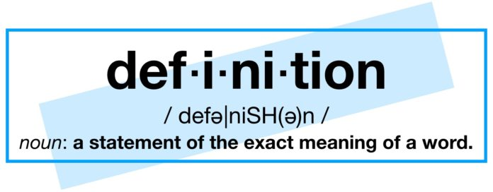

The Unused definition Role

-
For example
in
SYO365^5.p
-
definitions are intended
to define symbols using
universally quantified equations or equivalences with an atomic LHS
-
Chris Benzmüller (I think)
suggested having a :=
connective for definitions, but it has not been used
-
Can I throw out
:= or definition from the syntax?